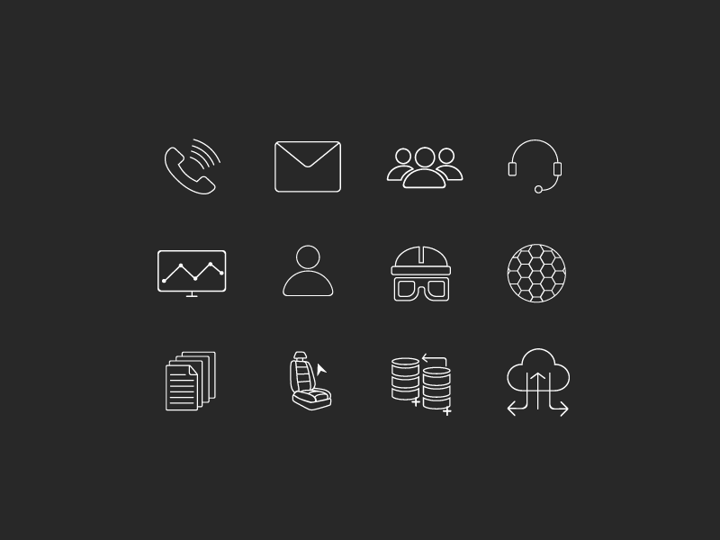

Toyota Boshoku Internship
I worked as an intern at Toyota Boshoku Turkey in summer 2017. And I was responsible for designing a new portal website that includes all the system and website links used by employees.
1.Journey
After the meeting, to get a shared understanding of the project we specified the following subjects:
After specified the details, I created wireframes and icons. And got feedback from department members. Lastly, I delivered the final visual design.
Unfortunately, I’m unable to share the final design of the project due to privacy. But there’s no problem with icons. Each icon that you can see on the following image represents a system or website used by employees.
Icons
2.Conclusion
It was an interesting journey for me with a lot of learning points and new experiences. Most importantly, this internship helped me to try to understand others’ perspectives and to focus a lot on problem instead of creating perfect visuals.